AI Command Bar
One week to build it. Four months understanding what it should grow to be.
Hudl
During Hudl's annual one-week skunkworks event, my coworker Gabby wanted to build an AI-powered search bar just to learn how to build with AI. I already suspected we'd need real filter-search for our upcoming Volleyball Consolidation work, so we built toward that instead of a demo. A week later we convinced our PM to ship the V1 straight to production. I spent 4 months after it was shipped continuing the side project to understand the real search queries coming in so I could learn what people actually want from it.
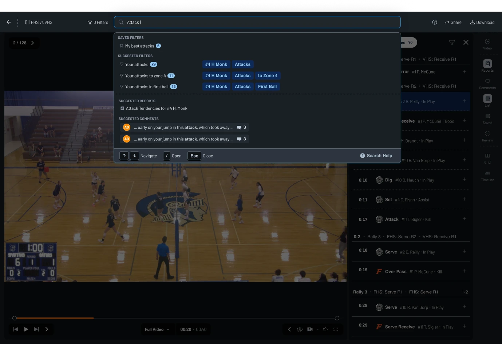
- Origin
- Hudl's annual skunkworks week — one week to build anything.
- Early bet
- Filter-search we knew Volleyball Consolidation would need soon anyway.
- Timeline
-
1 week to build V1
4 months of post launch - Team
- Me (design), 7 engineers, 2 QA
The Vision
It’s AI, but subtle. It doesn’t talk back. It just does.
Users can find exactly what they’re looking for fast, accurately, and using their own words.
It’s not just a search bar to look for clips, but a new way to command the UI.
Designed and Built V1 in 5 days
Skunkworks weeks don’t come with research, a spec, or a second designer. What they come with is seven engineers who signed up to learn how to build with AI, making a dozen small calls an hour while I’m in one conversation at a time. So the first thing I made wasn’t a screen. It was the vision above and the four principles below it — what the team could settle arguments against when I wasn’t in the room.
Speak the user’s language
Match how people actually phrase things, not how our data is structured.
Explain States
Make it to understand what happened and why.
Make it accurate
Results have to be trustworthy, or people stop bothering to search.
Make it fast
Speed is part of the experience, not a performance afterthought.
Then the design itself, decided in hours rather than weeks: where it lives, what it looks like, and the states it moves through.
Placement
It went into the top bar, in line with the filter count and the match name — not a docked panel, not an overlay. Anything sitting beside the video takes room from the video, and the video is the only reason a coach opened the page. In the chrome, search is always one keystroke away and never in the way.
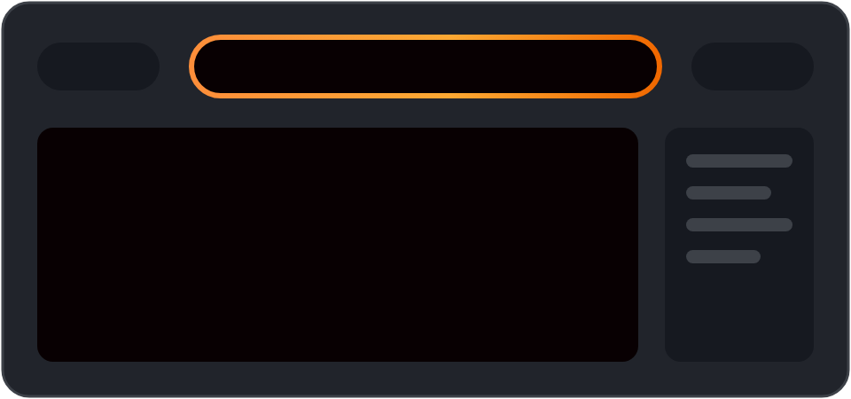
Color
The field is the only thing in that entire bar carrying color; everything around it is grayscale. A gradient sweeps its border while it thinks. If the AI isn’t going to say anything, color is how it tells you it’s there and that it’s working.
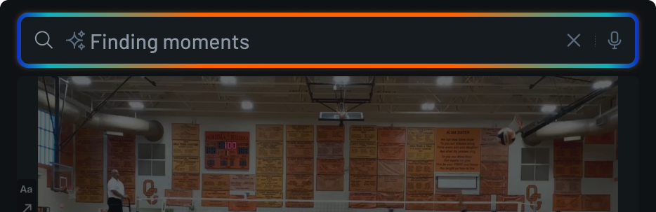
Empty, typing, error, and found states
An unlabeled field teaches nobody anything, and we had no room for a tutorial. The placeholder was the entire instruction set — enough to suggest the field would take a sentence, without promising more than we could deliver in a week.
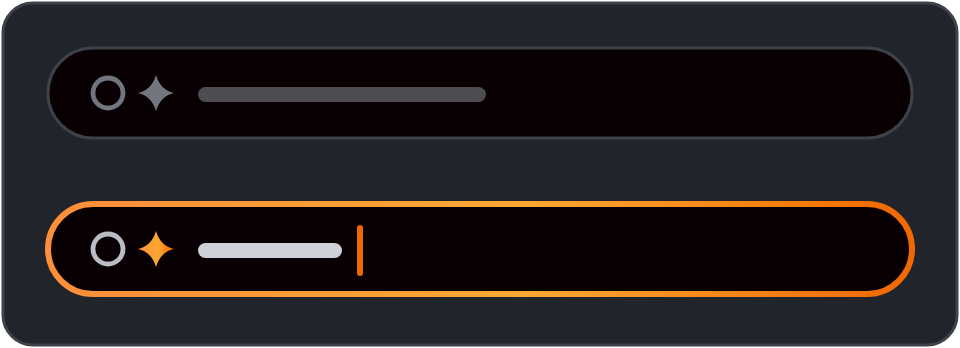
Type-ahead
The moment you type, the field offers readings of what you’ve written, each with the number of moments behind it: your attacks, 29. To zone 4, 11. In first ball, 13. That was the answer to encourage exploration — you learn what the system can do by watching it guess, rather than by reading help text.
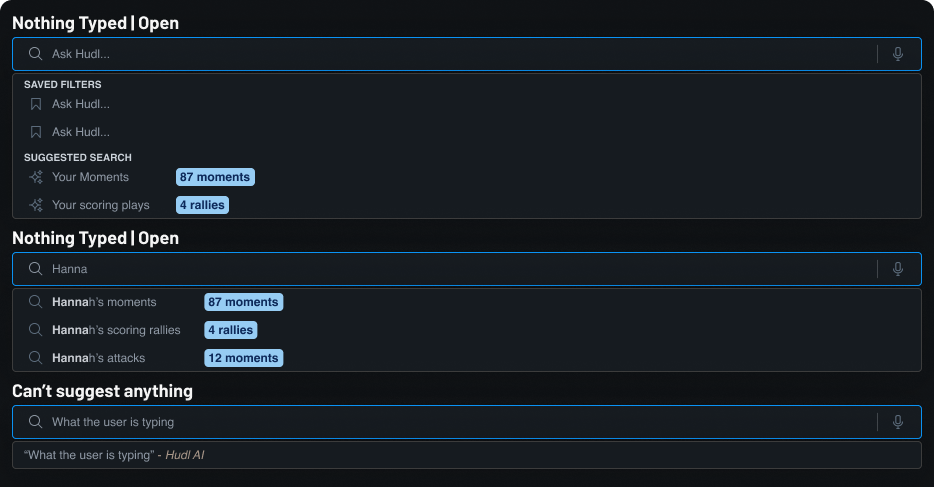
The natural language piece
My education isn't in fully design. The other half is actually in rhetorical analysis of written language. One of my strengths is being about to think about language and ideas in a very abstract manner. I felt pretty suited to help my team think through the higher probability words that we would be met with and how to write instructions explainig to the AI so it was more likely to get the sentence correct.
Step 1: The first thing the search bar had to do was connect words — even ones outside our schema — to the related filters, so a user could more quickly find the clips they wanted to watch.
-
Pronouns
“my” becomes you. “their” becomes the opponent.They’re already signed in. We should know who "my" is.
-
Slang
“swing” becomes Attack. “dime” becomes Set. “roof” becomes Block.Common terms aren't always the one that gets used in description sentences.
-
Scenarios
“scoring moments” becomes Kill, Ace and Block together.Connected concepts grouped by purpose. Things aren't always described individually.
The first shippable version
By Friday we had something that worked end to end. It was fast. It was cheap to queary. It was mostly accurate as far as we could tell. And a user could ask to see "swings" or "dimes" or describe the pieces of video they wanted to watch instead of needing to click 4-5 sets of filters to get to where they wanted.
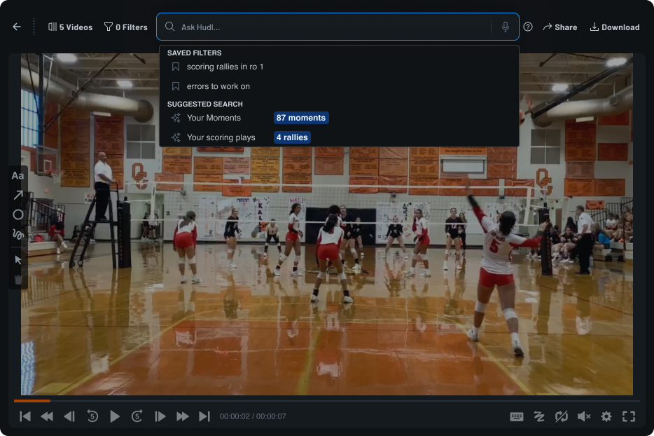
Getting it onto the roadmap
Skunkworks projects are supposed to die on Friday. This one was never scoped, never staffed and never meant to ship — so I spent the back half of the week arguing that it should anyway. It was an AI feature that Hudl was itching to have. And one that was not a generalized chatbot that got shoved into a product to push sales. It solved a real need. From the user side: it can be hard to know the exact combo of filters you need to find exactly what you want, but easier to descibe it in your own words. From a technical side, it's incredibly difficult to build a good search that accounts for, well natural language, the exact way AI works.
Design-led, not spec-led
Nobody handed us a brief. Gabby wanted to learn how to build with AI, and I pointed that at a gap I already knew Volleyball Consolidation was going to hit. The direction came out of design, and seven engineers built toward it.
Shipped as a question
We pushed it live to see what would happen. A demo can only ever tell you whether something looks good. Production was the only way to find out what people would search for. We didn't fully lean into the command bar vision. For now, it only searched for clips. Our theory/hope was that people would want it to do more.
Two months of reading real searches
Then I ran the research we couldn’t run up front, because now there was something to run it on. 20,239 searches from 1,168 coaches, athletes and staff — every one of them typed by someone who wanted something, with no researcher in the room.
20,239
searches, read and coded one at a time
1,168
people behind them — 680 coaches, 469 athletes, 19 Hudlies
87%
came back with the right filters
1.07s
average wait, at $1.03 per 1,000 searches
How I analyzed it
20,239 queries is too many to sort by hand and too few to hand to a model and trust. So I used AI to help me write a deterministic Python script instead: it pulled the searches, tagged each one against our own data schema, and scored whether what came back was the right set of filters. The judgment lives in rules I can read rather than in 20,239 calls I made one at a time — so when the categories changed I re-ran it in seconds, and I could take the numbers into conversations.
What I found
Users were already using it as a command bar.
And we had started with just search. The long term vision was aligning with users expectations. Only two thirds of it was filtering. The rest asked the product to do something — and the queries say exactly what.
65.3% filtering — the feature we built
34.7% asking the product to do something
-
Start a workflow 20.1% of all searches
- “identify unknowns”
- “how do i tag the game”
- “split tool”
- “update player number”
-
Go to a different video 11.2%
- “harriton basketball”
- “north scott vs pv”
- “past vidoes”
-
Change how the video plays 2.0%
- “big screen”
- “turn states off”
- “auto skip to next event”
-
Open a report 0.6%
- “spray chart”
- “attack chart”
- “insights”
Accuracy for choosing the correct filters was a mixed bag.
87% of searches came back with the correct filters. The other 13% isn’t spread evenly — it lands almost entirely on the things the field was never wired to do, plus two filters that needed data the model was guessing at.
Search Result Accuracy - Right more than 87% of the time
-
Event Only 95.6% 160
-
Result Only 93.5% 108
-
Athlete Only 91.7% 648
-
Multiple basic events + results 88.8% 322
Search Result Accuracy - Wrong more often than that
-
Event + Athlete 79.4% 34
-
Team Only 58.5% 41
-
Rotations 53.8% 13
-
Complex filter sentences 33.3% 12
The need for more search guidance (we needed better type ahead)
The 2 most accurate search types, event only and result only. Even though these searches were accurate, they tended to be followed up with a subject + event/result. Users were searching for something that we were not providing. The lacked an implied subject. My theory was that when a user was typing attacks or serves, they were really looking for moments done by a specific player or team (i.e. [Hannah's] attacks or [FHS's] serves. Users just didn't think to add in the subject, but it was needed because we can't really infer it from what someone types.
We over indexed on the natural language and sentence complexity
Though it did become more common toward the tail end of the four month time frame, most searches were very simple and based in language used in our schema (ie #4 Hannah Monk's attacks, FHS's serves, etc). It was a cool feature. But for now, it's not something to add more to. It's just not how people were searching for things.
Four changes we made based on the findings
1. Improve type ahead with more options
The gap
Event only and result only were our most accurate search types, but they were almost always followed by a repeat search with a subject added on. Users typed attacks and meant someone’s attacks — they just never thought to say whose. Type-ahead did nothing with that. It returned one raw AI Search entry and made you find out the hard way.
The fix
Type-ahead now supplies the subject for you, ranked above the raw search — #4 H Monk attacks · 16 Farmington High School attacks · 47 — each with a live count, so a wrong guess is visible before it costs you your place. It also stopped treating “attack” as only a filter: a saved Attack Tendencies report and the comments that mention it surface in the same list.
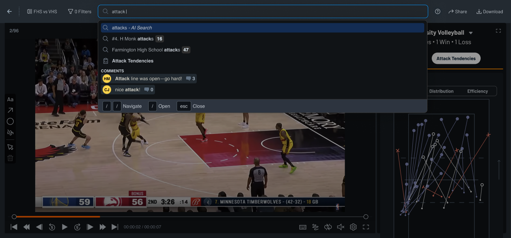
2. New destinations
Start a workflow
20.1% of all searches — the single biggest ask — were someone typing “identify unknowns” or “update player number,” not looking for a moment at all. Type-ahead now catches that intent, typos included, and starts the task itself: identify an unknown athlete by image or by video, straight from the search field.
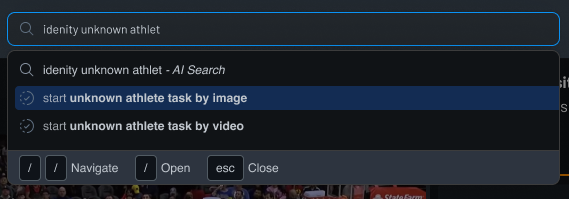
Open full screen reports
Only 0.6% of searches asked for a report by name, but those used to just run as a filter and come back empty. Typing attack tendencies report now recognizes the report and opens it full screen — no filtered results standing in the way.
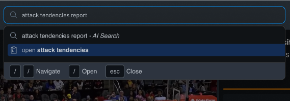
Toggle between video modes
“Big screen” and “turn stats off” made up the 2% of searches asking to change how the video played, not what was in it. Typing full video now offers to switch playback modes directly — full video playback or full screen — instead of returning zero moments for a query that was never about filtering.
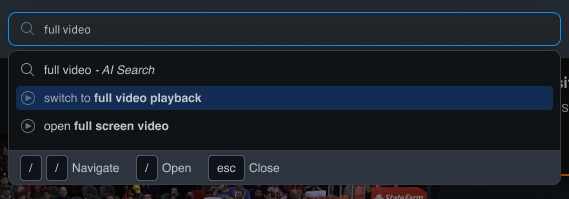
Change selected videos while filtering
11.2% of searches were asking to leave the current video entirely — “north scott vs pv,” “past videos.” A query like hannah’s attacks in the last 5 matches now does both at once: pulls those five matches in as the selected video set and filters all of them for her attacks, in one search.
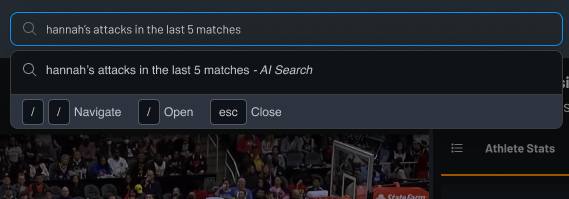
3. Less AI. A more hybrid approach beteen AI and fuzzy search allow our searches to be more accurate (and cheaper!)
Searches with just Attacks or Aces don’t need a model
A player plus an event, schema words by themseleves, they're resolvable against a data schema we already own. When users typed exclusively words that we owned in a very simple sentence structure, we trigged fuzzy search instead. This increased the accuracy to Event only, Result only, Athlete Only, Team only to 100% accurate search results. Everything else still used AI to guess at what a user typed. We just flipped a switch for the things we were 100% confident what someone was searhing for.
4. A new AI color
More Hudl-y. More orange.
The blue -> orange -> blue used one of Hudl's brand colors and a selection state color. Working with our design system team and branding, who were focused on multiple AI initives wanted our AI color to be differnt. The orange -> yellow, to be more subtle gradient with less browns in between was switched.
Results from Improvements
Improvements in Accuracy
The swich from full AI to a hybrid AI/fuzzy search helped us see massive gains in simple phrase searches. One or two word searches tended to hit 100% accuracy because they were not using AI. This freed up space to have the AI get more focused and narrow in its usage, which helped us see a slight increase in accuracy. Complex sentences, for example, saw a bump in accuracy from 33.3% to 43.8% (returning the exact correct filter set, no more and no less). It's not yet where I want that number to be, but it's a real improvement.
Higher search filter usage - higher repeat users. Workflow searches became one offs, not repeated usage.
This isn't a hard number for successs, but it feels good. There were two very important initiatives going on at Hudl while this was shipping/after it shipped. Hudl was trying to cpature more of the NFL and elite volleyball market. AI Search that simplied filter was one of the two major benefits that these user groups saw that got them excited to explore a new product, which is saying something coming from groups of users that are very resistent to changes in their software.
User Sentiment
Excitement from our most elite users
This isn't a hard number for successs, but it feels good. There were two very important initiatives going on at Hudl while this was shipping/after it shipped. Hudl was trying to cpature more of the NFL and elite volleyball market. AI Search that simplied filter was one of the two major benefits that these user groups saw that got them excited to explore a new product, which is saying something coming from groups of users that are very resistent to changes in their software. The next steps would be to add it in for these two groups.
What I learned
How to really use MVPS to guide the road map of a product
This project felt like such a great way to under stand what feautres are important and need to be designed. We built the most minimal thing we could build without all of the bells and whistles we would normally add or panic about it not having, while making sure the basics felt very polished. And then we let it sit and breath. I learned so much about how users were trying to use search for. But also how we used it to influence other parts of our road map. Our users searching for "unknown athletes" were looking for a feature they were use to and did not have, but moved it up in priority simply due to the sheer number of searches.
Not all product features can be built this way. But sticking with the basics and learning from there for 0-1 features are a fantastic use of a developement team's time.